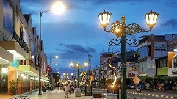
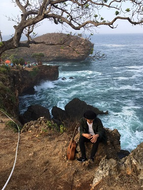

Tugu Jogja— lokasi tugu terletak tepat di perempatan antara jalan Diponegoro, A.M Sangaji,
Jalan Jenderal Soedirman, dan Jalan Pangeran Mangkubumi.
Mudah diakses dan banyak menjadi tujuan wisatawan yang bertandang ke Jogja.

malioboro
Malioboro
Malioboro
Malioboro adalah nama salah satu kawasan jalan dari tiga jalan di Kota Yogyakarta yang
membentang dari Tugu Yogyakarta hingga ke perempatan Kantor Pos Yogyakarta.
Secara keseluruhan terdiri dari Jalan Margo Utomo, Jalan Malioboro, dan Jalan Margo Mulyo.
Jalan ini merupakan poros Garis Imajiner Kraton Yogyakarta.

kesirat
Pantai Kesirat Gunung Kidul
Pantai Kesirat
Wisata alam Gunung Kidul Pantai Kesirat, memiliki perbedaan dengan wisata pantai di Jogya lainnya.
Biasanya, pantai berhiaskan pasir putih. Tapi pantai Kesirat tidak memiliki pasir pantai yang landai.
Di tepi laut hanya ada jajaran tebing yang curam.
Tebing ini ideal untuk lokasi rock fishing.